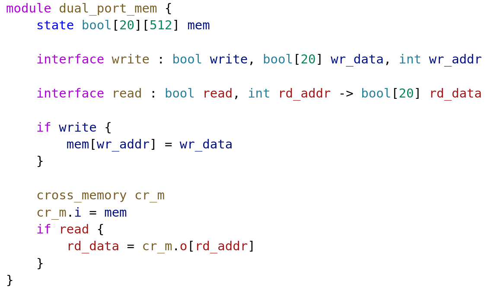

Main Features through examples
Pipelining through Latency Counting
module pow17 {
interface pow17 : int i -> int o
int i2 = i * i
reg int i4 = i2 * i2
int i8 = i4 * i4
reg int i16 = i8 * i8
o = i16 * i
}

FIZZ-BUZZ Lookup Table using Generative Code
module fizz_buzz_gen {
interface fizz_buzz_gen : int v -> int fb
gen int FIZZ = 15
gen int BUZZ = 11
gen int FIZZ_BUZZ = 1511
gen int TABLE_SIZE = 256
gen int[TABLE_SIZE] lut
for int i in 0..TABLE_SIZE {
gen bool fizz = i % 3 == 0
gen bool buzz = i % 5 == 0
gen int tbl_fb
if fizz & buzz {
tbl_fb = FIZZ_BUZZ
} else if fizz {
tbl_fb = FIZZ
} else if buzz {
tbl_fb = BUZZ
} else {
tbl_fb = i
}
lut[i] = tbl_fb
}
fb = lut[v]
}
In the end, the generative code is executed and all that results is a lookup table.
(Clock-) Domains for separating out logically distinct pipelines
For this feature to be useable you really must use the LSP. The semantic analysis of the compiler gives important visual feedback while programming that makes this much easier to understand.
In this example, we create a memory block with a read port and a write port. This module has two domains: The read interface domain and write interface domain. Every wire in the design is part of one of these domains (or an anonymous domain if it's not connected to either interface). Signals are not allowed to cross from one domain to another unless explicitly passed through a domain crossing primitive.
